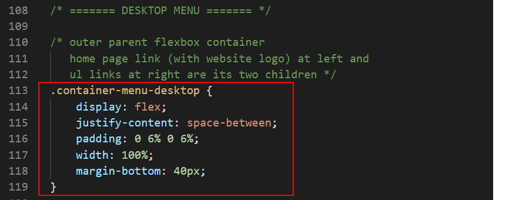
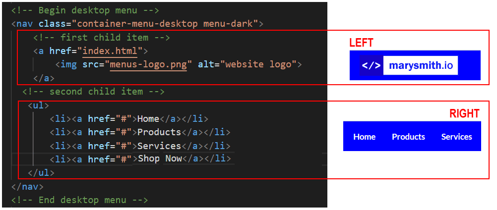
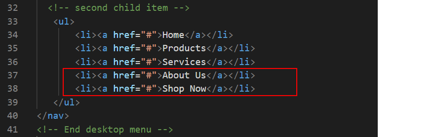
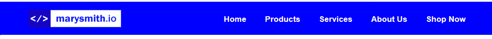
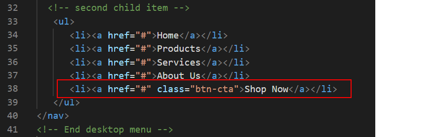
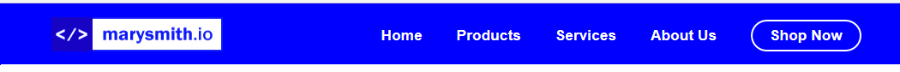
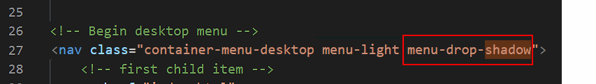

Introduction
In this Tutorial you will work with a basic desktop navigation bar or navbar.
Project folder and files
Your first step is to download the files you need for this Tutorial.
- Download the following compressed file to your computer:
menus-sandbox.zip
- Copy the ZIP file into your websites folder.
- Uncompress the ZIP file.
- The files will unzip into a sub-folder of your websites folder named menus-sandbox.
You should see five files: one HTML files, one CSS files and three image files.
Now you can begin to work with the files you have downloaded.
- In Visual Studio Code, open the following two downloaded files.
- menus-sandbox.html
- menus-sandbox.css
- In your web browser, open the menus-sandbox.html web page.
Creating a desktop navbar
Follow these steps to create a typical navigation menu or navbar that is displayed on a desktop/laptop screen.
- In VS Code, display the menus-sandbox.html web page.
- Just after the opening <body> tag, copy-and-paste the following:
<nav class="container-menu-desktop menu-dark">
<a href="index.html">
<img src="menus-logo.png" alt="website logo">
</a>
<ul>
<li><a href="#">Home</a></li>
<li><a href="#">Products</a></li>
<li><a href="#">Services</a></li>
</ul>
</nav>
<
- Save the menus-sandbox.html web page.
On desktop/laptop screens, the new navbar should look as shown below.

About the navbar parent container block
Let’s look at the first block that contains the navigation bar for desktop screens. You can see that it has two CSS classes assigned to it.

- container-menu-desktop: This creates the desktop menu and controls everything about its appearance – except its colours.
It is 72 pixels high (height: 72px) and fills the full width of the desktop screen (width: 100%). The content that follows the desktop menu bar is 'pushed down' by a spacing of 40 pixels (margin-bottom: 40px)

- container-menu-dark: This class, and its alternatives of container-menu-light and container-menu-transparent, has just one purpose: to set the colours used in the desktop menu.
The container-menu-desktop CSS class is styled as a flexbox parent container. This sets the content of the navbar, both the logo image and the list of menu options, as centred vertically (top-to-bottom) within the navigation bar. The justify-content: space-between style rule controls the spacing between the logo at the left and list of menu options at the right.

Two child items of the container-menu-desktop block
Within this ‘parent’ container with its two classes of container-menu-desktop (for layout) and container-menu-dark (for colours) are two ‘child’ items:
- A hyperlinked image (a tag) named item-logo: This first child item controls the display of the logo, which is positioned at the left of the desktop menu bar.
Typically, the logo is wrapped in a hyperlink that, if clicked, takes users to the home page (index.html) of the website.
- A bulleted list (ul tag): This second child item controls the display of the menu options, which are aligned in a horizontal list at the right of the desktop menu bar.

Working with the desktop navbar menu
In the next few steps you will update the navbar you created earlier.
Adding more menu options
First, let’s add two more options to the navbar menu.
- To the list of bullet items, add two more menu options as follows.

- Save the menus-sandbox.html web page.
In your web browser, the navbar should now look as shown below.

Styling a link as a CTA button
Next, style the final menu option hyperlink as a button.
- To the final option in the list, add a CSS class named btn-cta. This will style the menu option as a button with a solid, coloured background and square corners.

- Save the menus-sandbox.html web page.
In your web browser, the navbar should now look as shown below.

Changing the colour scheme
You can reverse the navbar colour scheme simply by changing a CSS class.
- Edit the second of the two CSS classes assigned to the container-menu-desktop as shown below.

- Save the menus-sandbox.html web page.
In your web browser, the navbar should now look as shown below.

Adding a bottom shadow effect
Now, you will add an extra visual feature: a small shadow effect that is displayed along the bottom of the navigation menu bar.
- Add the following third CSS class to the container-menu-desktop as shown below.

- Save the menus-sandbox.html web page.
In your web browser, the navbar should now look as shown below.